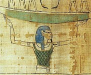

Нун (від древнеегіптского слова "вода"), в єгипетській міфології втілення водної стихії, яка існувала на зорі часів і містила в собі життєву силу. В образі Нун злиті уявлення про воду як про річку, море, дощ і т. д.
Нун і його дружина Наунет, що уособлює небо, по якому сонце плаває вночі, були першою парою богів, від них відбулися всі боги: Атум, Хапи, Хнум, а також Хепри і інші. Вважалося, що Нун очолює раду богів, де богині-левиці Хатхор-Сехмет доручено покарати людей, що замислили зло проти сонячного бога Ра.
Нун являє собою образ існував на початку творення світу первозданного всесвітнього океану, в уявленнях єгиптян висхідний до реальних природних явищ - розливів величного Нила.